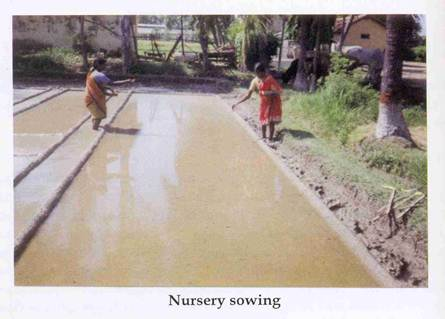
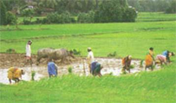
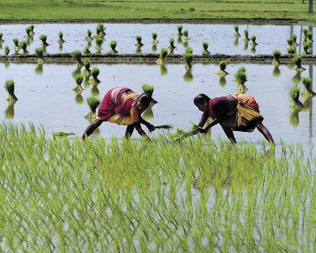
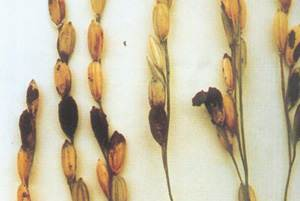

GPBR 112 :: Lecture 09 :: SEED PRODUCTION TECHNIQUES IN PADDY VARIETIES

Phenology
Botanical Name : Oryza sativa
Chromosome number [2n] : 24
Family : Poaceae
Inflorescence : Panicle
Pollination : Self-Pollination
Panicle Emergence : 4 –5 days after boot leaf emergence
Flower Opening Pattern : Tip of primary & secondary branches and proceeds downward
Duration of Flowering : 6-8 days
Time of Anthesis : 7.00 –10.00 A.M
Speciality with flowering : Flower remain open for 10 minutes and afterwards it closes.
Anther dehiscence : Either before or after flower opening [independent of spikelet opening]
Temperature favorable for flowering : 24 -280C
Favourable RH for flowering : 70-80%
Difference between day and
Night temperature : 8-100c
Stigma receptivity : 3 days
Pollen viability : 10 minutes
Varietal seed production
Stages of seed production
In paddy depending on the demand 3 or 4 or 5 stages of seed multiplications are permitted under seed certification programme as follows.
- Breeder seed - foundation seed - certified seed
- Breeder seed - foundation seed stage 1- foundation seed stage 2 –certified seed
- Breeder seed - foundation seed stage 1- foundation seed stage 2 -certified seed 1- certified seed 2
Land requirement
The land should be free of volunteer plants (crop of previous season occur in this season) and the same crop or the other varieties of the same crop should not have been grown for the previous season, if it is the same crop it (previous) should be the same variety that has been certified. This selection is highly important for maintenance of genetic purity. They should have adequate irrigation and drainage facilities and the problem soils are not suitable for seed production.
Isolation
The crop should have 3meters of isolation at all sides of the seed production plot for maintenance of genetic purity.
Selection of seed
Seed should be from an authenticated source (SAU, NSC, State Department).For production of certified seed, foundation seed (FS) should be used as source seed which should be purchased with bill and tag (white for FS seed)
Seasons practiced at Tamil Nadu
In Tamil Nadu the availability of water in cannals, depends on the monsoon. Based on this in different districts, different sowing seasons are adapted as follows:
Month of sowing |
Seasons |
Duration of varieties |
December - January |
Navarai |
Below 120 days |
April – May |
Sornavari |
Below 120 days |
April – May |
Early kar |
Below 120 days |
May – June |
Kar |
Below 120 days |
June – July |
Kuruvai |
Below 120 days |
July - August |
Early samba |
130 -135 days |
August |
Samba |
130-135 & above 150 days |
September – October |
Late samba / thaladi / pishanam |
130 - 135 days |
November – October |
Late thaladi |
115 -120 days |
November - October |
Late pishanam |
130 -135 days |
Selection of season
Season should be selected based on duration of the variety and the water availability.
VARIETIES |
SEASON |
DURATION |
POPULAR VARIETIES |
Shout duration |
November- December |
Below 120 days |
TKM9 ,CO 36, |
Medium duration |
November |
130-135 days |
Bhavani ,CO43, |
Long duration |
August |
More than 135 |
White Ponni, |
Upland rice |
July –August ---on receipt |
All durations but |
MDU1,PKM1 |
Rainfed rice |
June-July and September – |
Specific to |
ADT 38 ADT39 |
Seed Rate
It varies with varieties and type of cultivation.
Variety / type of cultivation |
Seed rate |
LOW LAND CULTIVATION (transplanting) |
60 kg /ha |
For low land cultivation by broadcasting |
80-100 kg/ha |
For rainfed rice |
75-100 kg/ha |
Seed Management Technique
Dormancy
Paddy exhibits dormancy which varies for duration of 0-30/45days depending on the variety. This could be broken by either soaking in KNO3 0.5 % for 16 hr or soaking in 0.1N HNO3 for 16 hrs. However the duration and concentration vary with varieties (e.g.) ADT36 exhibit 20-30 days of dormancy period from days to physiological maturity period which could be broken by soaking the seeds in 0.5%KNO3 for 16 hrs. Practically the intervening duration between the harvesting, and threshing, and further drying will remove the dormancy.
Seed Upgradation Technique (Egg Floatation Technique)
Either before processing or after storage or due to improper processing Paddy seed may have less vigorous seed such as immature, ill filled and insect damaged seed which may adversely affect the planting value of the seed. Removal of this seed will favour better establishment and higher production potential. These seed may be removed by adaptation of a simple water floatation technique based on specific gravity using salt water as a dissecting solution for separation of good quality seed from low quality seed, and egg is used as an indicator for specification of specific gravity measurement of 1.03 (120g of salt in 1000ml of water)
Methodology
A bucket of potable water has to be taken and in that water o fresh egg which sinks to the bottom has to be taken. To the potable water with egg outside slowly the common salt was added to a level at which the egg floats at top exposing 2.5 cm of its shell outside (check the egg floatation now and then on addition of salt to the solution). The egg is removed and the paddy seed are dropped into the solution which separates as sinker and floater .the sinkers are good seeds while the floaters are less vigorous and dead seeds. The floaters are removed and used as feed and sinkers are used for further multiplication.
Caution
- Egg is only for measurement of specific gravity and has no work to do with separation.
- If the density of water is more, more portion of egg will float if less egg will be inside the solution.
- If the density of water is more loss of quality seed may occur ,lesser density the separation will not be perfect
Sprouting of seeds (pre germination)
Paddy seeds are sown at nursery in pre germinated condition for better establishment for supply of oxygen at waterlogged condition. Seeds are soaked in big tough for 24 h in gunny bags tied loosely for easy transmission of water and for ensuring soaking of each and every seed. Seeds are then tied tightly and incubated in dark for 12h (overnight). White protrusion of radices by the seed exposed to outside expresses the pre germination of seeds and these seeds are sown in nursery by broadcasting.
Hardening and other seed management techniques
- In case of implementation of fortification treatment, seed could be soaked in equal volume of water to ensure that none of the solution is left unimbibied by the seed
- For dry land and upland paddy, seed hardening with KCl (1%) and pelleting with Azospirillum (600g /ha) could be adopted (e.g.) MDU 1, Paramagudi1.
- Seed colour variation occurs due to bacterial infection at later stages of maturation. Seed coloring with polycoat @3g kg-1of seed could improve the initial quality and marketability of such discolored seed.
- Polymer coating of Seed also will help to identify the brand name of seed and to identify the varietal variation among the cultivars by even the illiterate labours.
Nursery Management
For raising one hectare of paddy, 20 cent (800m2) nursery is needed. The area should be prepared by floating the area one or two days before ploughing and allowed the water to soak in. The soil should be kept at shallow sub emergence. Before ploughing the water should be allowed to a depth of 2.5cm .Then the land is ploughed and brought to a puddling condition. The optimum size of the nursery bed will be 2.5 meters broad and with channels of 30cm width in between. In paddy, on raising more varieties in a same place separate irrigation channels are to be prepared for each variety to avoid the admixture of seeds and to maintain the genetic purity.
Nutrient Management
Before the last puddling apply 40kg of DAP and if not readily available apply straight fertilizers@16 kg of urea and 120kg of super phosphate.
Basal application is required (DAP) if the seedlings are to be pulled out at 20 to 25 days after sowing. If the seedling are to be pulled out after 25 days application of DAP is done 10 days prior to pulling out of the seedling.
Basal application of phosphorus to the nursery enables the seedling to store phosphorus and utilize it even in later stages of growth and application of DAP to the nursery is highly economical.
Sowing
A thin film of water should be maintained in the nursery, and the sprouted seeds of paddy should be sown uniformly on the seed bed.

Water Management
- Drain the water 18 to 24 hours after sowing and if there are pockets where water is stagnating, drain it into the channel as germination will be affected in the places where the water is being stagnated
- Allow the water to saturate the soil from the third to fifth day
- From the fifth day onwards increase the quantity of water to a depth of 1.5 cm depending on the height of the seedling
- Afterwards, maintain the water level to a depth of 2.5 cm
- Pull out the seedling at appropriate time
- Do not remove the adhering soil with a hard surface
- Tie the seedling in convenient size for easy handling
- Do not allow the seedling to dry
- Puddle the soil well
- Apply 12.5tonnes of FYM or compost per ha
- Incorporate green manure into the field by in situ ploughing
- Dig the corners and prepare the bunds well with plastering for effective stagnation of water
- Apply the phosphorus and potasic fertilizers at last ploughing for effective availability of nutrients to plants
- Keep a thin film of water at the time of transplanting and raise the water level to 2.5 cm on the next day
- Dip the root in phosphamidon 0.02 % against rice root nematode 20 minutes prior to planting
- Plant the seedling at optimum spacing and optimum depth
- Transplant the seedling at 4-5 leaf stage
- 5cm of water should be stand in the field. Normally once ion 2 days for loamy soils and once in 3 days for clay soils.
- Excess water leads to yellowing of plant. So drain the water
- The critical stages of irrigation are primordial initiation, booting, heading and flowering
- Spray FeSO4 0.5% to prevent yellowing of plants in calcarious soils.
- Spray DAP 2% to enhance seed set in paddy cultivars (BEST).
- Spray GA3 three times at panicle initiation stage for complete exertion of panicle (hybrids).
- Spray panchakavya 1% for organic seed production to enhance seed set.
- Spray 0.5 % zinc sulphate thrice during crop growth on 20th 30th and 40th day of planting for short duration varieties or 30th 40th and 50th day for medium and long duration varieties in case of zinc deficient soils.
- Is important to maintain for maintenance of genetic purity.
- Remove all off types (deviant of the variety) and rouges (variant of the variety).
- Remove when suspected is the thumb rule of roughing.
- Rouging should be done from the sowing up to harvest and remove the as and when it come across.
- Seeds attain maturity with the visual symptom of turning of ear heads to golden yellow color and when the ear heads exhibit drooping symptomsi.e 28 days after 50% flowering in short and 31 days in medium and 35 in long duration.
- When 80% of the plants are exhibiting the symptom the crop is ready for harvest
- The moisture content of the seed will be 18-20-%.
- Lodged plants should not be selected for seed purpose.
- Withhold irrigation one week before harvest.
- Delayed harvest may lead to heavy shattering
- Bundled plants should be stacked as ear heads facing outside to avoid heat damage.
- Threshed produce should be clean and free of admixture in cracks and crevices.
- Birds scaring are also practiced in places of requirement.
- Thresh the seed by beating the plants on a hard surface ,but take care that the seeds are not mechanically damaged.
- In tractor and machine threshing avoid mechanical damage by proper adjustment of speed/machine setting.
- Thresh at proper moisture content to avoid crushing / cracking (16-17 per cent).
- Clean the floor, equipment, containers to avoid genetic and physical mixture.
Weed Management
Apply any one of the pre emergence herbicides viz. butachlor 2l per ha,thiobencarb@2l/ ha, pendimithalin @ 2.5l/ha on 8th day after sowing to control weeds in the low land nursery. Keep a thin film of water and allow it to disappear. Avoid drainage of water. This will control germinating weeds.
Pest Management (NURSERY)
INSECTS /DISEASES |
CONTROL MEASURES |
Army worm |
Spray Cholophyriphos 20EC 80ml or endosulphan |
Thrips |
Phosphamidon85 WSC 25 ml(or)Monocrotophos 36 |
Green leaf hopper |
As above or maintain 2.5 cm of water in the nursery and broadcastanyone of the following |
Case worm |
Mix kerosene in standing water and remove the cases and destroy and spray Monocrotophos 36 WSC 40ml (or) Quinalphos 25 EC 80 ml |
White tip nematode |
Sun drying of seeds for two days at 6h interval |
Rice root nematode |
Carbofuran3g at 3.5kg / 20cents |
Diseases |
|
Blast |
Spray with insecticide Copper oxy chloride100g or |
Brown spot |
Carbendazim 40 g |
Tungro disease |
Aplly carbofuran 3g at the rate of 3.5 kg ten days after |
Age of transplanting
The age of transplanting vary with varieties as follows
DURATION OF VARIETIES |
AGE OF TRANSPLANTING |
Short duration varieties |
18-22days |
Medium duration varieties |
25-30days |
Long duration varieties |
35-40days |
Pulling out of seedling

Main field preparation
Fertilizer Requirement
CROP DURATION |
FERTILIZER REQUIRMENT ( Kg / ha ) |
||
Nitrogen ( N ) |
Phosphorus (P ) |
Potash ( K) |
|
Short duration |
120 |
38 |
38 |
Long and medium duration |
150 |
50 |
50 |
Bio-fertilizer |
Azolla @ 1t/ha 3-5 days after weeding |
||
Transplanting

Details on transplanting
Specifications |
Duration of cultivars |
||
Short |
Medium |
Long |
|
No. of seedling per hill |
2-3 |
2 |
2 |
Depth of planting (cm) |
3 |
3 |
3 |
Spacing ( cm) |
20 x10 |
20 x15 |
20 x20 |
No. of hills/m2 |
50 |
33 |
25 |
Breeder |
Adopt double row planting with a spacing of 15 x 10 cm for easy roughing |
||
- Adjust the sowing in such a way that harvesting does not coincide with rain
Weed Management
Pre emergence herbicide
Use butachlor 2.5l/ha or thiobencarb 2.5l/ha fluchloralin2l/ha or pendimethalin3l/ha as pre emergence on third day and is to be followed by hand weeding on 30-35days. On the failure of pre emergence application, hand weed at 15 days and spray 24Dsodium salt with a high volume sprayer 3 weeks after transplanting when the weds are in3-4 leaf stage
Gap Filling
It is to be taken up between 7-10days after transplanting
Pest and disease management
Insects |
Control measures |
Stem borer |
Fenthion100EC @ 500ml |
Thrips |
Phosphamidon85 WSC @ 300ml |
Mealy bug |
Phosphamidon85 WSC @ 300ml |
Rice root nematode |
Carbofuran3g 16.25kgin standing water |
Diseases |
|
Blast |
Carbendazim @ 250g/ha |
Brown plant hopper |
Mancozeb @ 1000g/ha |
Sheath rot |
Carbendazim @ 250g/ha |
Sheath blight |
Difolatan @ 200 |
Bacterial leaf blight |
Streptomycine Sulphate+Tetracycline@300g+Copper Oxychloride @ 1250g/Ha |
Grain discolouration |
Mancozeb@1000g/ha |
Water Maintenance of Paddy
Top Dressing
Apply 25% of N and k as basal and remaining 75 % in 3 split doses at active tillering, panicle initiation, and at heading stage in equal proportion of 1:1.
Foliar Spray
Rouging
Physiological maturity
Pre-harvest Sanitation Spray
Ten days prior to harvesting spray endosulphan 30EC 70ml / ha against storage pests. Spraying of 10 % prosopis leaf extract is recommended against grain discolouration.
Harvesting
Threshing
Winnowing and Drying
Threshed produce are cleaned and winnowed to remove the dirt and other unwanted physical material. Winnowing should be done in a cleaned surface. The seeds are dried in a threshing floor with adequate stirring which is known as tempering. The seeds are dried to 13 % moisture for better storage .On drying in a threshing avoid drying between 12 noon to 2pm to avoid the ill effects of ultra violet rays of noon sun. Through not for bulk for prolonged storage this practice should be adopted. Seeds are also can be dried in mechanical driers in places of high humidity like areas of sea shore.
Grading
The bulk seeds are normally processed through seed cleaner cum grader and the seeds of middle sieve are selected for seed purpose.
Size of seed Sieve size
Long slender (Ponni, whitePonni) = 1/16 x 3/4 " (1.3mm x 19 mm)
Slender - IR 50 = 1/15 x 3/4" "
Medium slender (IR 20, CO 43) = 1/14 x 3/4" (1.5 mm x 19 mm)
Short bold (ADT 36, 37,38,39,
TKM 9,Ponmani) = 1/13 x 3/4" (1.8 mm x 19 mm)
Seed Treatment
Normally paddy seeds are not treated with chemicals owing to their economic utility. But for long term storage, treat it with captan or thiram or bavistin @ 2-4g / kg of seed, Halogen mixture treatment (Chlorine based halogen mixture @3 g /kg of seed) is a eco-friendly treatment. As a prophylactic measure seed can be fumigated with celphos @ 3-6g/m3. But the moisture
content of the seed should not be above 10-12% which may interfere with the seed quality in terms of germination.
Seed Yield
The yield of crop varies from 3000 to 7000 kg /ha depending on genotypes, location, season management practices and pest infestation.
Storage
Paddy is a good storer. Generally paddy seeds store well up to 12-36 months depending on the genotypes but heavy infestation of storage pests reduce the storability of seed even to a month or two. For prolonged storage HDPE and polylined gunny bags are used, while for normal storage jute canvas bags are used. However the bags should not be stirred for more than 8 bags height to avoid pressure on seeds of lost bag which may cause damage to the seed. Polythene bags of 700 gauge is not highly preferable for paddy as the sharp edge may pierce the bag and convert moisture vapor proof container as moisture pervious container.
Mid storage Correction
Seeds from storage are given with mid storage correction when the seed standard reduce to 5-10% lesser than recommended. The seeds are soaked in double the volume of disodium phosphate solution (3.60g dissolved in 100l of water) for 16h and the seeds are dried back to original moisture content (12-13 percent).
Seed Certification
Land Requirement
The previous crop should not be the same crop and if to be the same crop it has to be the same variety and should be certified and has to be accepted for certification. The field should not have any volunteer plants.
Number of Inspections
A minimum of two inspections is needed, one at the time of flowering and another at the time of or before harvest.
Field Standards
General: Paddy field should be isolated from contaminants as follows
Contaminants |
Minimum distance(meters) |
|
Foundation stage |
Certified stage |
|
Fields of other varieties |
3 |
3 |
Fields of same variety not confirming to varietal purity requirements for certification |
3 |
3 |
Specific standard: These are verified at the final inspection
Factor |
Maximum permitted (%) |
|
Off types |
0.050 |
0.20 |
Objectionable weed plants* |
0.010 |
0.020 |
*Objectionable weeds are Wild rice (Oryza sativa L.var.fatua Prain (Syn.O.sativa L.f. spontanea Rosch.)
Seed Standard
Factor |
Standards for each class |
|
FOUNDATION |
CERTIFIED |
|
Pure seed ( maximum) |
98.0% |
98.0% |
Inert matter (maximum) |
2.0% |
2.0% |
Huskless seed (maximum) |
2.0% |
2.0% |
Other crop seed (maximum) |
10/kg |
10/kg |
Other distinguishable varieties (maximum) |
10/kg |
10/kg |
Total weed seed (maximum) |
10/kg |
10/kg |
Objectionable weed seed (maximum ) |
2/kg |
2/kg |
Seeds infected with paddy bunt |
0.10% (By number) |
0.50% (By number) |
Germination ( Minimum) |
80% |
80% |
Moisture (maximum) |
13.0% |
13.0% |
For vapour proof containers (maximum) |
8.0% |
8.05% |
Paddy Bunt

| Download this lecture as PDF here |